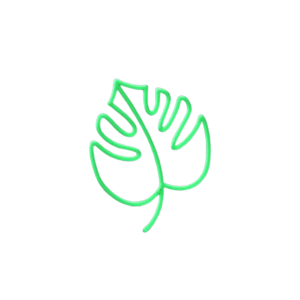

Accueil
Green IT & Sites Webs
Quiz Green IT
À propos
Vos informations
Nom :
Prénom :
Date de naissance :
Adresse mail :
Status :
Choix :
Majeur
Mineur
Quiz sur la Green IT
Qu'est ce que la Green IT ?
Une pratique visant à réduire l'impact environnemntal des technologies d'informations
Un système de recyclage des anciens ordinateurs
Une méthode pour augmenter la consommation énergétique des serveurs
Quel est l'objectif principal de la Green IT
Réduire la consommation d'énergie
Minimiser les déchets électroniques
Optimiser les performancesdes appareils électroniques
Donnez un exemple de pratique de Green IT
Envoyer